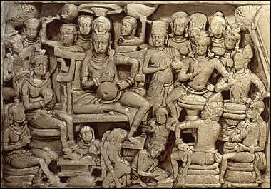

Interpretation of the Dream of Queen Maya
Queen Maya had a dream that a white elephant entered her right side. She told her husband of her dream and they consulted his court sage to learn the meaning of the dream. They were told that they would have a child who would grow up to be either a great emperor or a great spiritual leader. This scene shows the king seated on his throne with Queen Maya to his right. The king and queen are surrounded by several sages, courtiers and attendants. |